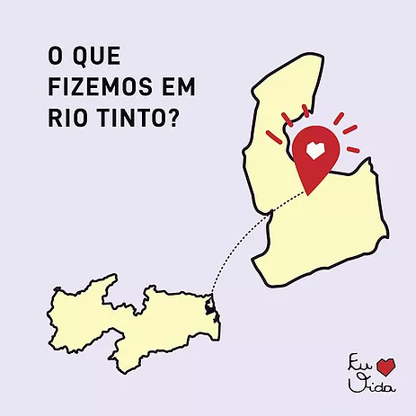
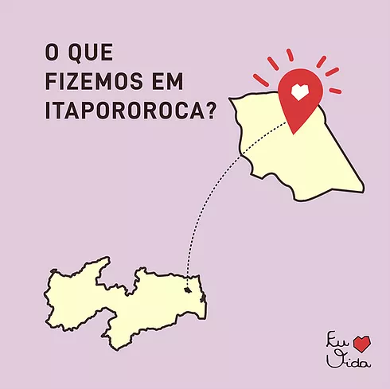
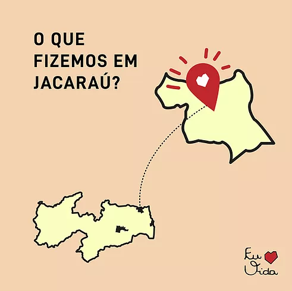

Onde Estamos
Mamanguape
Mamanguape é um município do estado
da Paraíba com aproximadamente 44 mil
habitantes, distribuídos em cerca de 340
mil km² de área.
da Paraíba com aproximadamente 44 mil
habitantes, distribuídos em cerca de 340
mil km² de área.
LEIA MAIS

Rio Tinto
Rio Tinto é um município localizado
no litoral norte da Paraíba. Com cerca
de 23 mil habitantes, é uma cidade pequena
que ocupa pouco mais de 466 km²
no litoral norte da Paraíba. Com cerca
de 23 mil habitantes, é uma cidade pequena
que ocupa pouco mais de 466 km²
LEIA MAIS

Guarabira
Guarabira é um município localizado
na região Agreste da Paraíba. Com cerca
de 60 mil habitantes, a cidade tem um
território de 165 mil km² e é conhecida como
a Rainha do Brejo paraibano.
na região Agreste da Paraíba. Com cerca
de 60 mil habitantes, a cidade tem um
território de 165 mil km² e é conhecida como
a Rainha do Brejo paraibano.
LEIA MAIS
Baía da Traição/Marcação
Baía da Traição é uma cidade
praieira localizada no litoral norte da Paraíba,
e tem uma população estimada em quase
9 mil habitantes.
praieira localizada no litoral norte da Paraíba,
e tem uma população estimada em quase
9 mil habitantes.
LEIA MAIS

Itapororoca
O município de Itapororoca, com seus 16.997
habitantes, está localizado no Litoral Norte paraibano
e em Abril de 2017 sediou o nosso projeto, sob a
coordenação de Ângela Souza, Mikaelle Laurentino,
Yulle Flávia e Wendson César.
habitantes, está localizado no Litoral Norte paraibano
e em Abril de 2017 sediou o nosso projeto, sob a
coordenação de Ângela Souza, Mikaelle Laurentino,
Yulle Flávia e Wendson César.
LEIA MAIS

Jacaraú
Jacaraú, localizada a 96 km de João Pessoa,
tem14.378 habitantes e sua área territorial chega
a 253 km².
tem14.378 habitantes e sua área territorial chega
a 253 km².
LEIA MAIS
Campina Grande
Campina Grande fica a 133,3km da capital da Paraíba
e possui uma população de aproximadamente
355 mil habitantes. É uma cidade de extrema importância
na Paraíba, no Nordeste e no Brasil.
e possui uma população de aproximadamente
355 mil habitantes. É uma cidade de extrema importância
na Paraíba, no Nordeste e no Brasil.
LEIA MAIS